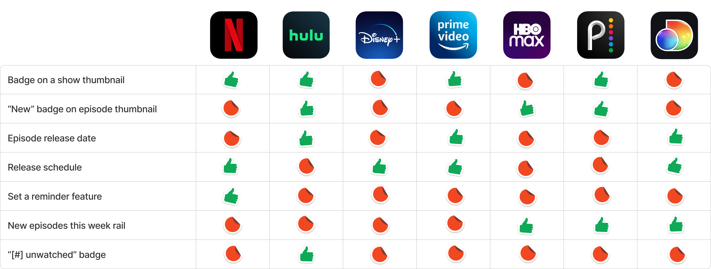
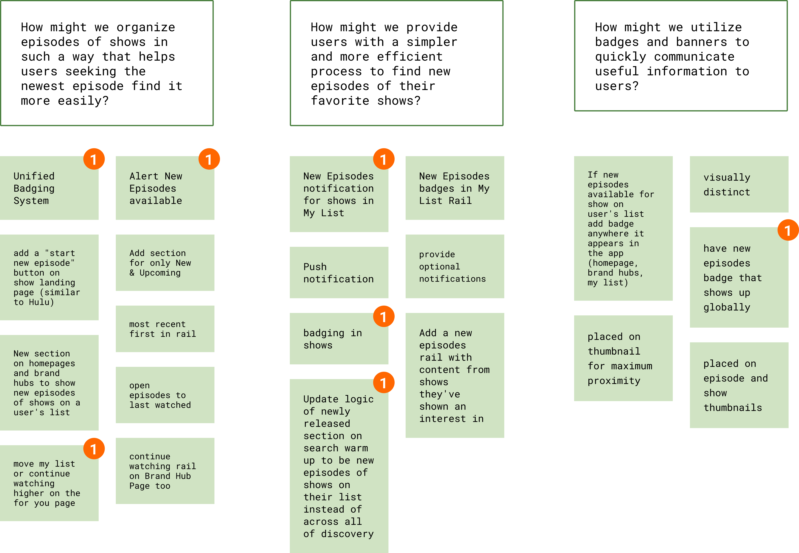
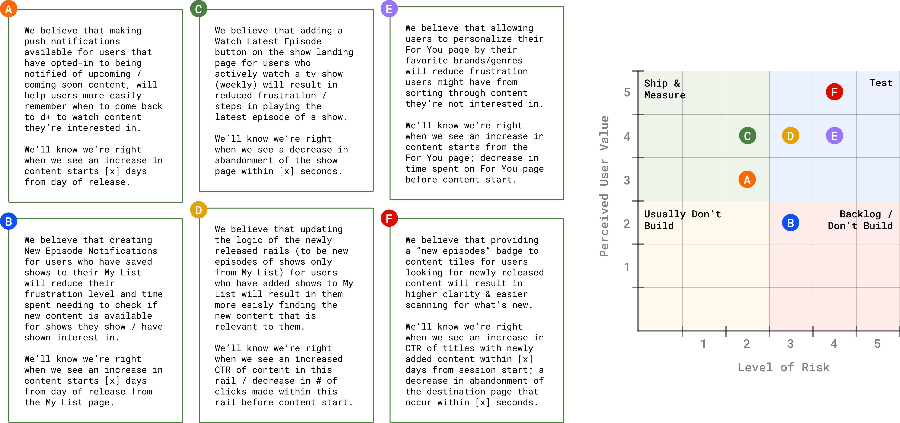

discovery+ was Discovery Inc's direct to consumer digital streaming service, giving users instant access to 2,500+ current and classic shows from lifestyle TV brands (HGTV, Food Network, and TLC), as well as nature and adventure channels (Animal Planet, Discovery Channel, and ID). Since then, discovery+ has merged with HBO Max into Max as part of Discovery Inc's merger with Warner Bros.
UX Design Intern, summer 2021
By rethinking how we keep users aware of new available content, we're providing a more personalized and simplified experience for our users that will also positively impact customer satisfaction and conversion rates for consuming content.
1. Finding and navigating to new episodes has been a source of frustration among users (30-35 customer feedback tickets submitted monthly + multiple Reddit threads devoted to this issue)
2. In app store reviews, customers suggest the use of visual tags / badges on show thumbnails to indicate the availability of new content.
3. Respondents from a prior research study indicated that when they did not watch a show upon opening the app, it was due to an inability to find newly released content.
There was not a process on discovery+ by which users could determine, at a glance, whether a given show had recently added a new epsiode. In addition, users have expressed difficulty with navigating to the newest episode of a show.
[FIG 1] NAVIGATING TO THE NEWEST EPISODE UX

[FIG 2] COMPETITIVE ANALYSIS
[FIG 3] HMW STATEMENTS + IDEATION SESSION
After creating "How might we" statements based on known user problems from customer feedback tickets and features as seen through competitive analysis, I organized and led an ideation session with UX design and research partners. We used the silent circuit ideation and dot voting methods.
I used the generated ideas to create hypothesis statements and worked with my mentor to prioritize them by organizing them into a matrix measuring risk and perceived user value.
Our goal was to handoff low risk and high perceived user value hypotheses / design recommendations to the product design and research teams for mockups and further research.
[FIG 4] HYPOTHESES + PRIORITIZATION MATRIX
The next steps were to hand off design recommendations / opportunities to the product design team. They'll create mockups and any prototypes needed for user testing. As a UX design intern, I would then work with the UX research intern to create a user testing plan using the assets from the product design team.
It's our job as UX designers to always advocate for the user and to help Product see initiatives from the user's point of view instead of from strictly the business's.
I was lucky enough to present to product, research, and design teams and one of their immediate suggestions was adding badging to series thumbnails. Although this was a good idea, it was important for me to think about addressing the core user problem first instead of coming up with solutions right away.